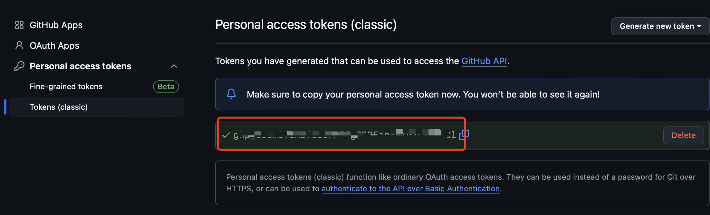
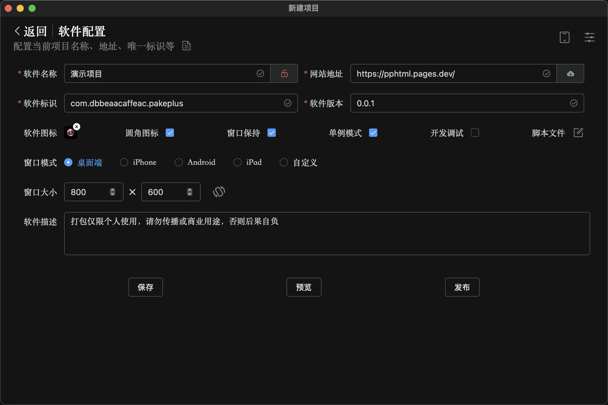

PakePlus 藏着的五个冷门开关——从"网页壳"到真正桌面应用的进阶玩法
你以为 PakePlus 只是个把网页套成桌面 APP 的简单工具？我把设置页翻了个底朝天，挖出了五个官方不怎么宣传但实战价值极高的隐藏功能。
引子：你以为它只是个网页壳？
说实话，我第一次用 PakePlus官网 的时候，对它的认知就是"网页打包器"——从下载拿安装包，填个网址、点个发布，出来一个桌面 APP，双击就能开网页。这个定位完全没错，90% 的使用者也止步于此。
但有一天我闲得慌，对着软件配置页面一个一个开关点过去，翻到下面的时候发现，这家伙远不止"网页套壳"这么简单。它藏着好几个进阶开关，打开之后能把你的应用从"浏览器窗口换了个壳"，变成一个真正拥有系统权限的桌面程序。
今天这篇就把我挖到的五个冷门功能摊开说——每个我都亲测过，讲清楚在哪、怎么开、什么场景真用得上。
隐藏功能一：TauriApi 开关——让 JS 脚本直接调系统级 API
这是我觉得最有价值也最容易被忽略的开关。在软件配置页面往下滑，你会看到一个不起眼的"TauriApi"复选框，默认是关掉的。勾选它之后，你的应用里运行的 JS 代码就能调用 Tauri 框架暴露的一整套系统级 API。
三个 PakePlus 特有的 API
除了标准 Tauri2 的那堆东西，PakePlus 还额外给了三个好用的自定义接口：
downloadFile——从 JS 里触发系统级文件下载。网页里的下载按钮经常被浏览器 CORS 或安全策略卡住，用这个直接从系统层下，绕过所有限制，还能用系统原生的"保存对话框"让用户选路径。做批量下载工具、网盘客户端这类应用的人，这个 API 简直是刚需。
executeCommand——在用户电脑上执行命令行命令。这个是最强大也最危险的 API，功能等价于"在 cmd.exe 或 bash 里跑一条命令"。可以用来调本地 Python 脚本做后处理、用系统默认程序打开生成的文件、或者调用任何已安装的命令行工具。但只在你完全信任 JS 代码来源的时候才启用——如果打包的网页里藏了恶意脚本，用户电脑等于被完全接管。
openWindow——从一个 PakePlus 应用里打开另一个 PakePlus 项目的窗口。适合做多标签页导航或者跨项目联动的场景，一个主应用里嵌入多个子应用。
标准 Tauri2 API 全家桶
TauriApi 开关开启后，下面这些也全部可用：
- plugin-fs：读写本地文件系统，绕过浏览器沙箱限制——直接操作 C:/盘或者项目目录里的文件都没问题
- plugin-dialog：让用户选文件或目录，系统原生对话框，不再是浏览器那个丑丑的 file input
- plugin-http：从系统层发 HTTP 请求，完全不受浏览器同源策略限制，做跨域 API 调用再也不用配代理
- api/window：控制窗口行为——最小化、置顶、移动位置、关闭，甚至可以做出一个"常驻桌面的小工具"效果
- api/event：JS 和 Rust 双向事件通信，想做更复杂的系统集成这是基础
这个开关藏得真深，官方文档里也只是一笔带过。但对于想把"网页壳"变成真正桌面软件的人来说，TauriApi 是必须打通的任督二脉。

隐藏功能二：云端并行编译——点一次发布，五份安装包同时出
这个我之前也不知道，以为云端打包就是在 GitHub 上跑一遍 Tauri 编译。直到我去看了 PakePlus 模板里的 workflow YAML，才发现它用的是 GitHub Actions 的 Matrix Strategy——一次发布，Windows、macOS（Apple Silicon + Intel）、Linux（x64 + ARM64）、Android、iOS 全部并行编译。
并行 vs 串行的差别
假设你要出六个平台的包，每个平台编译耗时三分钟：
| 方式 | 总耗时 |
|---|---|
| 串行（本地一台机器编完一个再编一个） | 18 分钟 |
| 并行（GitHub Actions 五个 Runner 同时跑） | 3 分钟（取最慢那个） |
这个速度优势在目标平台越多的时候越夸张。而且 macOS 那两个 Runner 会自动把 Apple Silicon 和 Intel 的产物合成为一个 Universal Binary——用户下载一个 dmg，M 系列 Mac 和 Intel Mac 都能原生运行，不用 Rosetta 转译。
移动端也是原生编译
这里还有个容易误解的点：移动端不走 Tauri 路线，而是用原生框架打包。Android 用 Gradle + Android NDK 直接编 APK，iOS 用 Xcode 编 IPA，而且 PakePlus 支持免签——不需要 Apple 开发者账号也能出安装包，用 AltStore 或者企业分发渠道就能装到 iOS 设备上。
隐藏功能三：APP ID 的命名规范——看起来简单，错了就编不过
软件配置页面里有个"软件标识 ID"字段，就是那个填 com.xxx.xxx 格式的东西。我之前随便填了个 myapp，结果打包报了一堆莫名其妙的错，后来去PakePlus文档翻了一下才搞明白，是 APP ID 命名不符合规范。
规则其实很严格：
- 只能用小写字母、数字、下划线
- 段不能以数字开头
- 不能有连续点、首尾点
推荐用反向域名格式——有自己域名的直接 com.域名.应用名，没有的可以 com.github.用户名.应用名 或者 com.myname.mytool。PakePlus 自动生成的默认 ID 是一串哈希值加 pakeplus，虽然能用但不直观，建议自己改成有意义的。
别小看这个字段，APP ID 是应用在系统里的唯一标识符，Windows/Mac 上区分应用、Android 包名、Tauri 权限管理全都靠它。命名不规范轻则打包失败，重则系统里出现两个同名应用互相打架。

隐藏功能四：国产 Linux 系统兼容——你可能需要，但官方不怎么提
PakePlus 在系统支持列表里悄悄列了两个国产发行版：统信 UOS 和 银河麒麟 Kylin。这两个在政府、国企、学校的内网环境里是常见的国产化替代方案，而且都支持 ARM64 架构（飞腾、鲲鹏处理器）。
PakePlus 的云端编译可以直接出这两个系统的 deb 或 rpm 包，ARM64 和 x86 双架构都覆盖。如果你做的是需要在国产化环境里跑的内部工具，这个适配能力省了你自己去折腾交叉编译环境的大量时间。
隐藏功能五：Win7 / XP 特殊兼容——老机器也能跑
官方文档里还有一行小字：PakePlus 支持 Windows 7 甚至 XP。这个很反直觉，因为 Tauri2 默认要求 WebView2，而 WebView2 在 Win7 上是不可用的。
PakePlus 做了特殊兼容处理，云端编译可以生成针对旧系统优化的产物。实际使用中 Win7 用户需要手动装一下 WebView2 Runtime（一次性，约 60MB），推荐用绿色免安装版跳过安装器。部分新特性在旧系统上确实用不了，但对那些还在跑 Win7 的老机器来说，能打包能运行就已经足够了。
一个必须提醒的坑：executeCommand 的安全边界
上面提到 executeCommand 能执行任意命令行——功能强大，但必须明确边界。这个 API 的前提是"JS 代码来源完全可信"。如果你打包的是自己写的网页、或者完全信任的第三方代码，没问题。但如果网页本身有 XSS 漏洞、或者从不可信来源加载了远程脚本，那等于给攻击者开了一扇直接控制用户电脑的大门。
我的做法是：除非确实需要执行本地命令，否则 TauriApi 开关保持默认关闭。大部分"网页套壳"场景根本不需要开这个开关——过滤元素 + JS 注入 + 窗口设置就够了。
收尾
PakePlus 的定位很清晰：给开发者一个快速把网页变成桌面应用的工具。但它藏在表面之下的能力，足够你做出一个真正拥有系统权限、跨五平台覆盖、甚至适配国产系统的正式软件。
把这些开关都试一遍，你会发现它远不止"套壳工具"这么简单。